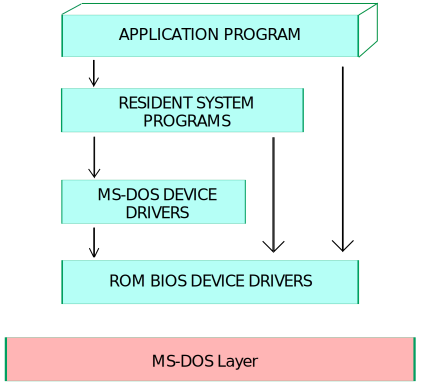

MS-DOS Operating System
- A disk operating system (DOS) is an operating system for x86 based personal
computers mostly developed by Microsoft.
- MS-DOS, its rebranding as IBM PC DOS, and some operating systems attempting to be compatible with
MS-DOS.
- Sometimes it is referred to as "DOS", which is also the generic acronym for disk operating system.
- MS-DOS was the main operating system for IBM PC compatible personal computers during the 1980s.
- It was gradually superseded by operating systems offering a graphical user interface (GUI) in
various graphical Microsoft Windows operating system generations.
- DOS is also used to describe several similar command-line disk operating systems.
- Early computers, such as the Commodore 64, Atari 800, and Apple II, all featured a disk operating
system, including Commodore Business Machines DOS, Atari DOS, and Apple DOS, respectively. DOS/360 was
an OS for IBM mainframes, which first appeared in 1966, but it is unrelated to the 8086-based DOS of the
1980s.

How DOS works?
When a computer is powered on, it goes through various steps called boot process. For a computer
running a disk operating system in the following six steps, such as:
- The read-only memory (ROM) bootstrap loader reads the Master Boot Record and passes control over to
it.
- The boot record loads the disk operating system into memory, and it takes control of the machine.
- The computer transfers data stored on a magnetic disk to its main memory, the random access memory
- It also transfers data to external devices attached to the computer, such as a computer screen or
printer.
- The computer provides various applications that organizes, read, and writes files on storage. The
files are organized in a hierarchical structure of directories, subdirectories, and files.
A disk operating system doesn't have a graphical user interface (GUI). Its interface is character-based,
so users must type commands in the command line to indicate what actions they want.
Features of DOS
- MS-DOS does not offer GUI (Graphical User Interface) and doesn't accept mouse inputs.
- It is a character-based interface system where all commands are entered in the text at the
command-line prompt.
- A disk operating system manages files, folders and allows program loading and execution. It can
control hardware devices such as disk, memory and allocate resources.
- MS-DOS offers a file system to organize, read and write files to disk storage.
- It is a single-user operating system and performs various taks to ensure the proper operation of
systems.
- It uses a 16-bit file allocation table (FAT16), and a 16-bit interface is used to define the
location of the memory of each file uniquely. These identifiers are stored in a tabular format with
the name File Allocation table.
- MS-DOS does not support a multiuser operating system, and it is less secure and does not have
concept of user roles.
- It is very lightweight due to its basic interface and limited features.
Limitations of MS-DOS
- Built-in security → DOS does not have built-in security, such as file ownership and
permissions.
- No multiuser or multitasking → It also does not support multiuser or multitasking.
- It can only run one program at a time, but it provides direct access to the basic I/O system
and underlying hardware.
Types of DOS Commands
- The entire set of commands available in DOS is divided into two types
Internal Commands
- Internal commands are the simplest memory resident commands, most commonly used commands and execute immediately because they are a part of file named COMMAND.COM
- When we list the files of our directory the internal commands are not seen.
- Once DOS is loaded, there is not need for the DOS Diskette in a drive to use these commands. E.g. DIR, COPY, MOVE, etc.
- If we execute internal command, the command processor executes the command itself.
External Commands
- They are separate utility programs or files stored in DOS directory.
- File name with an extension of .COM, .EXE or .BAT is considered as an external command.
- They are faster than internal commands because they do not look for the COMMAND.COM file and are executed directly.
- It does not execute the command itself but transfers the control to the appropriate program.